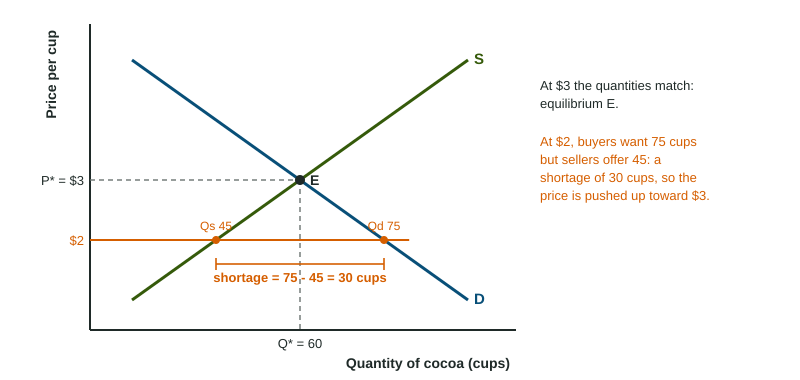

Market Equilibrium, Disequilibrium, and Changes in Equilibrium
A market is in equilibrium where quantity demanded equals quantity supplied.
Part 1 · Hook
Why this matters
Part 2 · Before you start
What this builds on
Part 3 · Prerequisite check
Quick check before you start
1. Better technology lowers the cost of making a good. Supply
- shifts right
- shifts left
- stays put while quantity supplied rises
- becomes vertical
Show the answer
Lower costs mean more is offered at every price.
- Correct: shifts right:
- shifts left:
- stays put while quantity supplied rises:
- becomes vertical:
2. When one curve shifts, the crossing point
- slides along the curve that did not move
- stays where it was
- moves to the origin
- moves along the curve that shifted
Show the answer
The new crossing lies on the curve that stayed put.
- Correct: slides along the curve that did not move:
- stays where it was:
- moves to the origin:
- moves along the curve that shifted:
3. A rise in buyers' incomes for a normal good
- shifts demand right
- shifts demand left
- shifts supply right
- moves buyers along the demand curve
Show the answer
Income is a demand shifter; for a normal good, more income means more demand.
- Correct: shifts demand right:
- shifts demand left:
- shifts supply right:
- moves buyers along the demand curve:
Part 4 · See it
See it first

Part 5 · Step by step
How it works, step by step
- The price is below equilibriumquantity demanded is greater than quantity supplied: a shortage
- Buyers compete for the scarce unitsthe price rises
- The price risesthe quantity demanded falls and the quantity supplied rises
- The two quantities become equalthe market reaches equilibrium, and the price stops changing
Part 6 · Key ideas
Key ideas
- Equilibrium: the price at which quantity demanded equals quantity supplied, where the curves cross.
- Below equilibrium: a shortage (Qd minus Qs) pushes the price up. Above it: a surplus (Qs minus Qd) pushes the price down.
- One shift: demand moves price and quantity the same way; supply moves them in opposite ways.
- Two shifts: one of price or quantity is indeterminate unless you know which shift is larger.
Part 7 · Misconception
A common mistake
The wrong idea: When demand rises and supply falls at the same time, both the price and the quantity rise.
What actually happens: Both shifts push the price up, so it rises. But the demand shift raises quantity and the supply shift lowers it, so the change in quantity is indeterminate without the sizes of the shifts.
Part 8 · Check yourself
Check yourself
Exam-style questions. Anything you miss goes into your review queue.
1. A popular study reports that eating oatmeal is healthy. Shift the right curve in the market for oatmeal and mark the new equilibrium.
Work on the graph (it needs JavaScript), then check.
Show the answer
Tastes shift demand right. The new equilibrium is up and to the right along supply: a higher equilibrium price and quantity.
- Key: demand shifts right
2. A drought destroys much of the orange crop. Shift the right curve in the market for orange juice and mark the new equilibrium.
Work on the graph (it needs JavaScript), then check.
Show the answer
Supply shifts left along demand: the equilibrium price rises and the equilibrium quantity falls.
- Key: supply shifts left
Data
The market for cups of cocoa
| Price per cup ($) | Quantity demanded | Quantity supplied |
|---|---|---|
| 1 | 90 | 30 |
| 2 | 75 | 45 |
| 3 | 60 | 60 |
| 4 | 45 | 75 |
| 5 | 30 | 90 |
3. Using the table, what is the equilibrium price of a cup of cocoa?
- $2
- $3
- $4
- $1
Show the answer
At $3 the quantity demanded (60) equals the quantity supplied (60).
- $2: At $2, 75 are demanded but only 45 supplied.
- Correct: $3: Right: 60 demanded and 60 supplied.
- $4: At $4, 75 are supplied but only 45 demanded.
- $1: At $1, 90 are demanded but only 30 supplied.
4. Using the table, how large is the shortage at a price of $2?
Type a number. A four-function calculator is allowed, as on the exam.
Show the answer
A shortage is quantity demanded minus quantity supplied: cups.
- Answer: 30
5. Using the table, how large is the surplus at a price of $5?
Type a number. A four-function calculator is allowed, as on the exam.
Show the answer
A surplus is quantity supplied minus quantity demanded: cups.
- Answer: 60
6. The fair sets the price of cocoa at $4. What happens next in this market, if the price is free to change?
- A surplus of 30 cups pushes the price down toward $3
- A shortage of 30 cups pushes the price up toward $5
- The market stays at $4, because sellers set the price
- A surplus of 30 cups pushes the price up
Show the answer
At $4, 75 cups are supplied and 45 demanded, a surplus of 30. Sellers with unsold cups cut prices until the market reaches $3.
- Correct: A surplus of 30 cups pushes the price down toward $3: Right: unsold cups push the price down.
- A shortage of 30 cups pushes the price up toward $5: Above equilibrium there is a surplus, not a shortage.
- The market stays at $4, because sellers set the price: With unsold cups, sellers compete by cutting prices.
- A surplus of 30 cups pushes the price up: A surplus pushes the price down, not up.
7. A city holds the price of parking below its equilibrium level. What does the market show?
- A shortage: drivers want more spaces than are offered
- A surplus: more spaces are offered than drivers want
- Equilibrium, because the city set the price
- A shift of demand to the left
Show the answer
Below equilibrium, quantity demanded is greater than quantity supplied: a shortage.
- Correct: A shortage: drivers want more spaces than are offered: Right: too low a price leaves more wanted than offered.
- A surplus: more spaces are offered than drivers want: A surplus comes from a price above equilibrium.
- Equilibrium, because the city set the price: Setting a price does not make quantities match.
- A shift of demand to the left: The price is on the axis, so the curves stay put.
Part 9 · Summary
Summary
Part 10 · Up next
What comes next
Part 11 · Connections